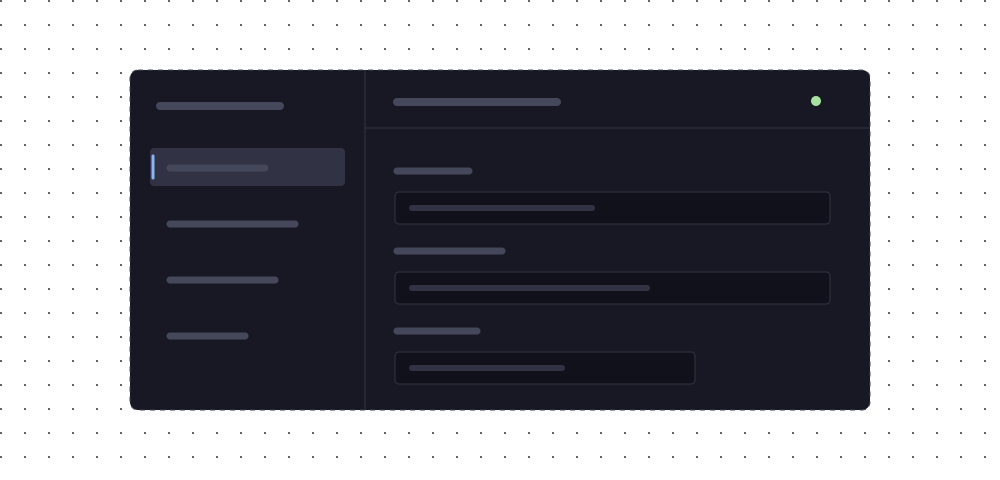
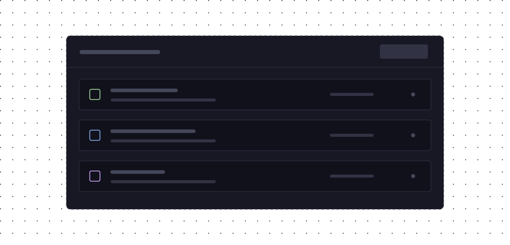

Connect VPNs, proxies, DNS, and traffic filters in a visual graph. Almagest brings them together in one local service, with paths you can see and change.
Give one app its own proxy. Chain a tunnel through another network. Build isolated test networks to try configurations and test hypotheses.
Follow the connections.Add nodes, connect typed ports, and edit your traffic paths.
Almagest / Node settings02

Screenshot placeholder
Get into the details.Open a node to inspect its settings, ports, and status.
Almagest / Snapshots03

Screenshot placeholder
Keep a point to return to.Save your setup, restore a snapshot, or start from an example.
01 / 03
What you can build
Small pieces. Useful connections.
Each node does a job. Connect compatible ports to make a path, or run several independent paths in the same graph.
01 / Tunnels & proxies
A route with a few more possibilities.
Connect WireGuard and AmneziaWG tunnels with SOCKS proxies. Put a proxy through a VPN, a VPN through a proxy, or one tunnel inside another. Each transport must support the next step in the path.
Try this Give one application a local SOCKS proxy that connects through a VPN.
Split traffic by address, domain, port, or protocol. Match applications, processes, users, and groups where the platform supports them. Add firewalls or remap addresses and ports along the way.
Try this Send selected destinations through a tunnel and keep other traffic on a direct path.
Combine static records, persistent caches, and fallback resolvers. Send queries through selected networks over UDP, TCP, or TLS. Serve the result to other clients or use it for captured host traffic.
Try this Resolve private names through your VPN and use a different resolver for public domains.
Inspect TCP connections by protocol, HTTP request data, TLS SNI, or ALPN. Add or terminate TLS. Manage certificates, pin keys, and limit a certificate authority's trust to selected domains or IP ranges.
Try this Route a TLS connection by its server name, or add TLS in front of a service.
Connect to Tailscale or Headscale. Import Amnezia VPN service keys and self-hosted profiles. Send TCP traffic through Tor or publish an onion service. Tor runs as a separate program under administrator-defined policy.
Try this Give a local application a proxy into your Tailscale network.
Test a graph with virtual networks and built-in HTTP clients and servers. Add values, conditions, and timed triggers to change paths while the service runs. Graph logic is still work in progress.
Try this Load the Mock Network example, change a connection, and save a snapshot of your setup.
The almagestd service runs your setup. Use the desktop app, web panel, or almagest-cli to manage it. Configuration uses JSON with comments, and the engine is also available as a Go library.
On x86_64-linux, add the desktop app with nix profile add github:asciimoth/almagest#almagest-app.
For NixOS, add almagest.url = "github:asciimoth/almagest"; to your flake inputs. Import the module in your NixOS configuration, where inputs is in scope:
The module installs the daemon and CLI and starts the service when you rebuild your system. Generated settings are read-only. To edit the graph from Almagest, replace the services.almagestd block above with a writable configuration:
The service creates configFile only if it does not exist. Later changes stay in that file. For secrets, set protectedSettings = null and use protectedConfigFile instead of storing them in the Nix store.
Process isolation defaults to off. The auto and strict modes require a qualified Linux amd64 host. See the flake setup notes for more options.
Build from source on Linux
On a Debian-, RPM-, or Arch-based system, install just and Git, then run:
Shell
git clone https://github.com/asciimoth/almagest.git
cd almagest
just install daemon app
Choose daemon, app, or both. The command checks build requirements and lists missing packages. It preserves existing files in /etc/almagest.
Start the Linux service
After an APT, RPM, Arch, or source install, enable the daemon:
Shell
sudo systemctl enable --now almagestd.service
To use the app or CLI without root, add your user to the almagest group. This grants full control of Almagest. Sign out and sign in after this command.